Villa Iluminada
Maria de los Angeles Tellez Torres
Feria de la noche buena
Maria de los Angeles Tellez Torres
Introduccion Viila Iluminada
Villa Iluminada nace para integar a la familia mexicana en un ambito de luz y color, enmarcada bajo la tranquilidad de la ciudad. Esta fiesta es digna de compartir a todos los visitantes. Creada por manos atlixquenses de mujeres, hobres y jovenes, que con pasión han trabajado para crear esta magia y asi generar el sustento para sus familias. Este proyecto tiene el objetivo de preservar la cultura y tradiciones fomentando la convivencia de paz y amor.
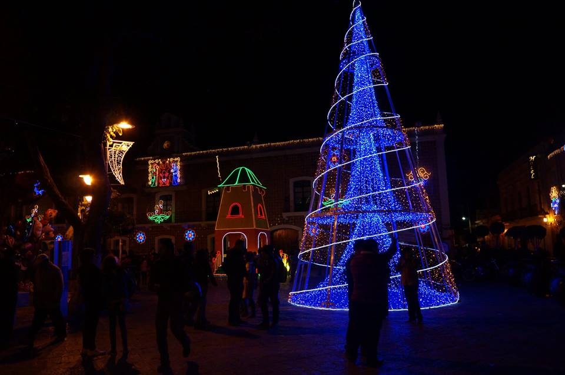
Una de las caracteristicas de villa Iluminada cada año, es que las tres mil figuras son distintas ya se renueva el diseño y se hace una precentacion distinta a la de los otros años.
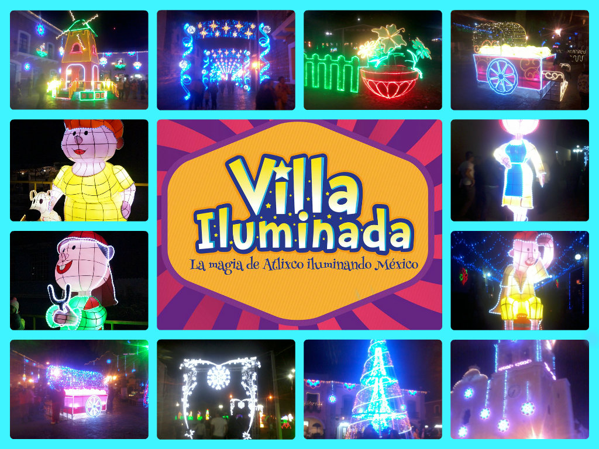
En esta ocasión, a través de 3 mil figuras nuevas y durante 43 días, todos los visitantes podrán disfrutar de la belleza arquitectónica de la ciudad de Atlixco, que se embellece con luces coloridas de variantes tonos y escenas alusivas a la época decembrina y la identidad atlixquense. Posterior al encendido, hubo un espectáculo de nieve en la calle Constitución, que miles de pequeños, con sus familias, disfrutaron al máximo. Villa Iluminada espera la llegada de entre 450 a 500 mil visitantes, lo cual permitirá tener una derrama económica de 55 a 60 millones de pesos, pues habrá poco más de 100 eventos culturales y artísticos, con la participación de 30 grupos provenientes de países como Guatemala, Colombia, España, Perú, Irlanda, Libia, Chile, Kenia e Italia, así como de México y la región.
El recorrido inicia, como ya es tradición, en la Avenida Hidalgo esquina con la calle 7 sur, atravesando el Zócalo de la ciudad y continúa por la Calle Constitución, pasando por la calle 4 norte, frente al Ex Convento del Carmen, la calle Nicolás Bravo, recorriendo el Boulevard Ferrocarriles para finalizar en el Parque Revolución. También, dentro de Villa Iluminada se va a presentar la Feria de la Nochebuena, del 28 de noviembre al 7 de diciembre y la Villa Infantil, que es un proyecto enfocado a los pequeños, a partir del día 12 de diciembre, ambos en el interior del Recinto Ferial.
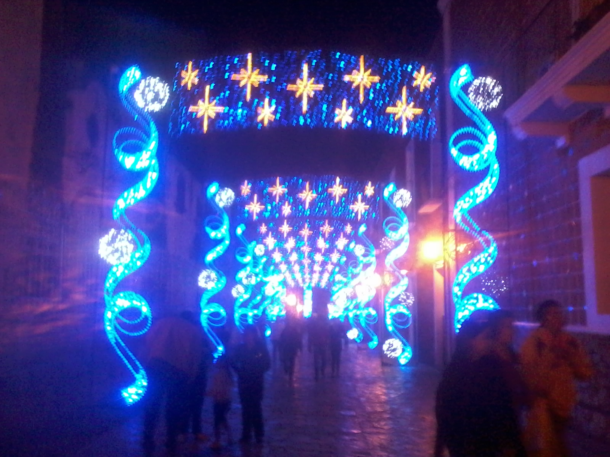
Maria de los Angeles Tellez Torres
Inaguracion Viila Iluminada
El dia 25 de noviembre es dia oficial de la Villa Iluminada Atlixco 2014, por parte del secretario de Turismo, Roberto Trauwitz, y el presidente municipal José Luis Galeazzi.
Más de 3 mil figuras navideñas adornan las principales calles del municipio, que inician en el zócalo hasta la estación del ferrocarril.
Como ya es tradición y por cuarto año consecutivo, cientos de familias presenciaron el encendido, recorrieron las principales calles del municipio y aprovecharon para tomarse fotos y disfrutar de los antojitos mexicanos que se venden en el lugar.
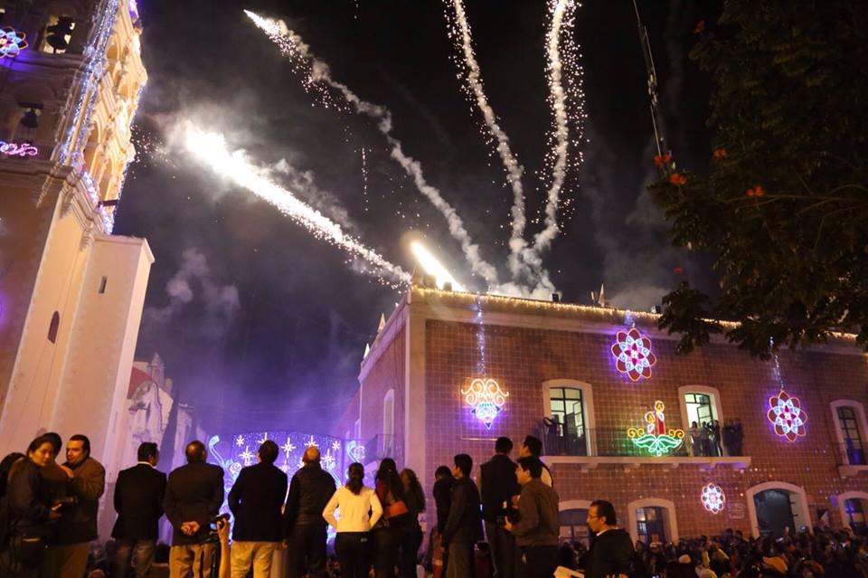
Acontinuacion una pequeña precentacion de la inaguracion de villa Iluminada.
video inaguracion de villa iluminada
Maria de los Angeles Tellez Torres
hubicacion Viila Iluminada
MAPA VILLA ILUMINADA
Maria de los Angeles Tellez Torres
Introduccion Nochebuena
El uso de la cuetlaxochitl o flor de nochebuena en México es ancestral, pues se le utilizaba con fines religiosos, medicinales y utilitarios desde siglos antes de la llegada de los españoles a México. Las tradiciones prehispánicas relacionaban a la flor de nochebuena con la guerra, sin embargo, con la evangelización cristiana, fueron los evangelizadores españoles franciscanos quienes empezaron a asociar la planta conocida hoy como nochebuena o flor de nochebuena a las fiestas del pesebre o natividad, pues era la costumbre en aquel entonces usar el color carmesí en los adornos de la natividad, después la población mexicana siguió adornando los nacimientos y las iglesias con la flor de nochebuena; derivándose de ahí su nombre de planta o flor de nochebuena.
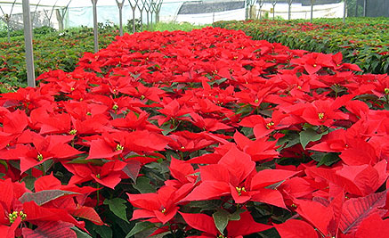
Aunque la flor de nochebuena es nativa de México y Guatemala, su popularidad en muchos países como símbolo navideño no se debe a que en México se le haya usado desde hace siglos, sino mas bien a la selección tanto en Europa como en EUA de nuevos cultivares mas propios para cultivarse en contenedores chicos, y en lo cual la familia Ecke en Encinitas California jugó un papel importante pues poseía secretamente una técnica que por medio de injerto le transmitía e infectaba a los nuevos cultivares con un agente biológico que en el caso único de las nochebuenas las ayuda a ramificar y dar la apariencia de ser mas compactas.
En México existe una considerable variación genética entre las nochebuenas nativas de diferentes regiones, éstas no se cultivan en macetas debido a que no poseen las características deseables para ser cultivadas en ellas, sin embargo, en México se cultivan mas de 100 diferentes variedades de flor de nochebuena que han sido seleccionadas por empresas especializadas en la obtención de nuevas variedades propias para cultivarse en macetas y contenedores.
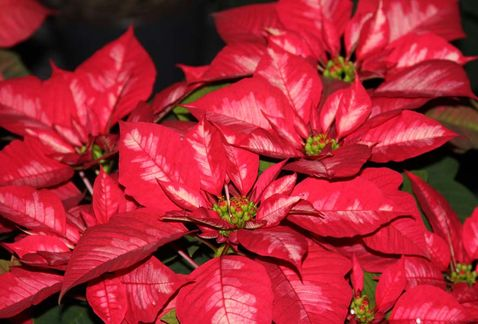
Maria de los Angeles Tellez Torres
feria de la noche buena Atlixco
Se pretende cultivar por lo menos un millón 600 mil plantas, en una superficie de 26 hectáreas, ya que el municipio de Atlixco es el primer productor de flor de Nochebuena en el estado.
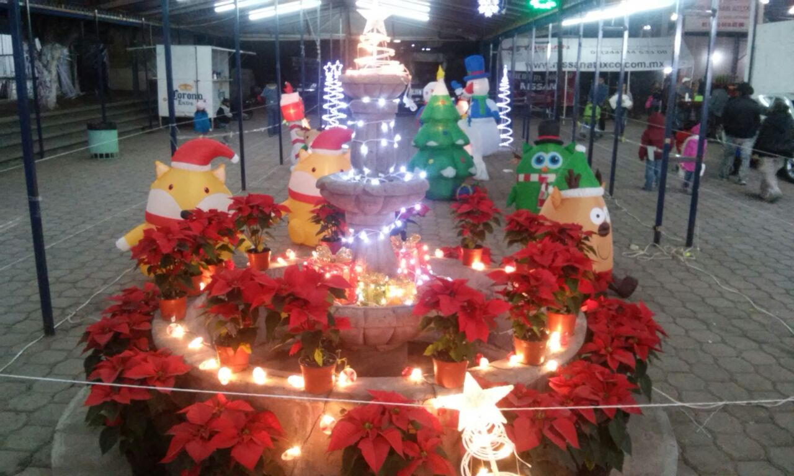
Con la presentación de 15 variedades de la Flor de Nochebuena expositores del Municipio de Atlixco anunciaron la realización de la Feria de la Nochebuena en el recinto municipal, del 28 de noviembre al 8 de diciembre, en el que se espera la participación de 50 expositores informó Presidente de la Asociación de Productores Manuel Santiago Cruz.
Con esta Expo se pretende cultivar por lo menos un millón 600 mil plantas, en una superficie de 26 hectáreas, ya que el municipio de Atlixco es el primer productor de flor de Nochebuena en el estado.
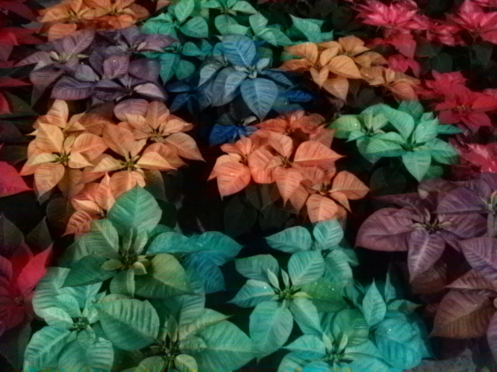
Pese a que Puebla ocupa el cuarto lugar nacional en producción de flor de Nochebuena y Atlixco contribuye con una buena parte de ello, los 52 productores de la zona se enfrentan a diversos problemas para mantener el cultivo, el principal, es que no son dueños de los espacios de cultivo y tienen que arrendarlos, situación que incrementa el costo final de las plantas.
El presidente de la asociación de productores, destacó que es al menos el 90 por ciento de los productores el que se encuentra en esta situación.
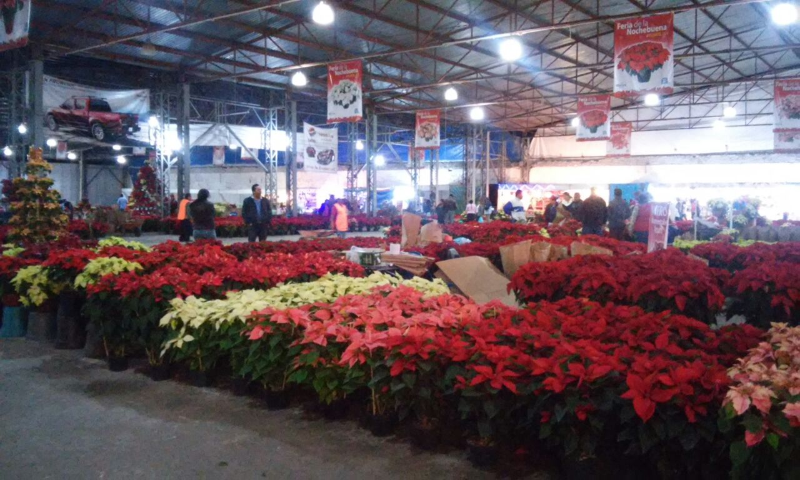
Recordó que este segmento es muy importante ya que genera 500 empleos directos en todo el año, pues se debe atender la producción de un millón 300 mil piezas en 25 hectáreas cultivadas.
La derrama económica estimada por esta actividad es de 68 millones de pesos, que benefician a 800 familias de manera directa.
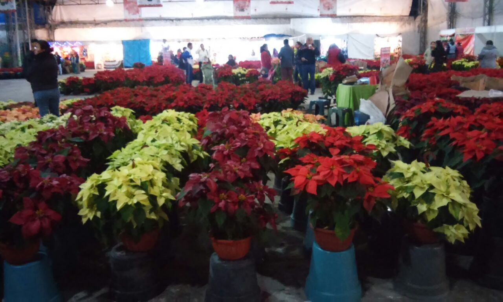
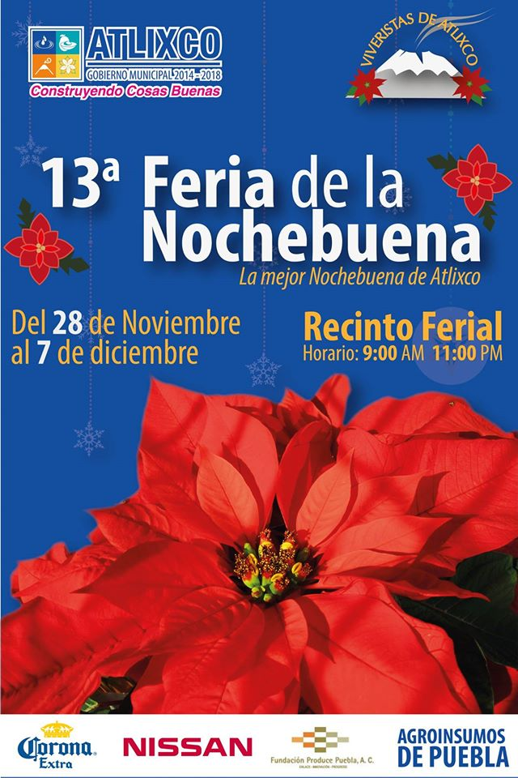
Maria de los Angeles Tellez Torres